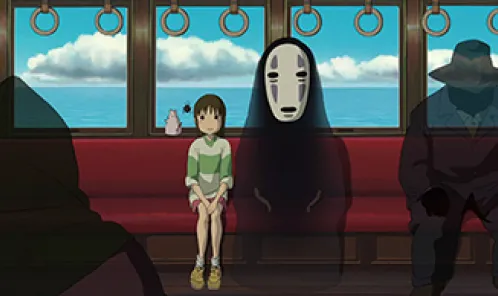
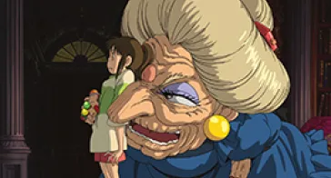
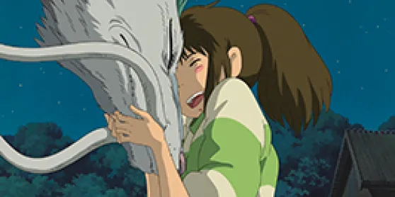

film
Le Voyage de Chihiro : Périple de la vie selon Miyazaki
Un chef d'œuvre de l'animation japonaise représentant notre société et les enjeux qu'elle représente pour la nouvelle génération
Synopsis
Le film relate l’histoire de Chihiro, une jeune fille déménageant avec ses parents. Passant dans une forêt, ils trouvent un étrange portail menant à un parc à thème désert mais avec des restaurants proposant des mets délicieux. Chihiro refusa d’y toucher, mais ses parents engloutissent les plats et se transforment en porc. Chihiro se retrouve donc seule dans un monde fantastique en marge de la réalité.
Chihiro prenant le train avec le Sans-visage, un esprit mystérieux
Pour sauver ses parents,celle-ci doit donc travailler au bain public, un établissement accueillant des esprits. Cependant la patronne du lieu , Yubaba est une sorcière tyrannique et cupide qui n’hésitera pas à lui mettre des bâtons dans les roues. Mais Haku, un mystérieux garçon, va aider Chihiro durant ce périple.
 Chihiro rencontrant Yubaba et Haku